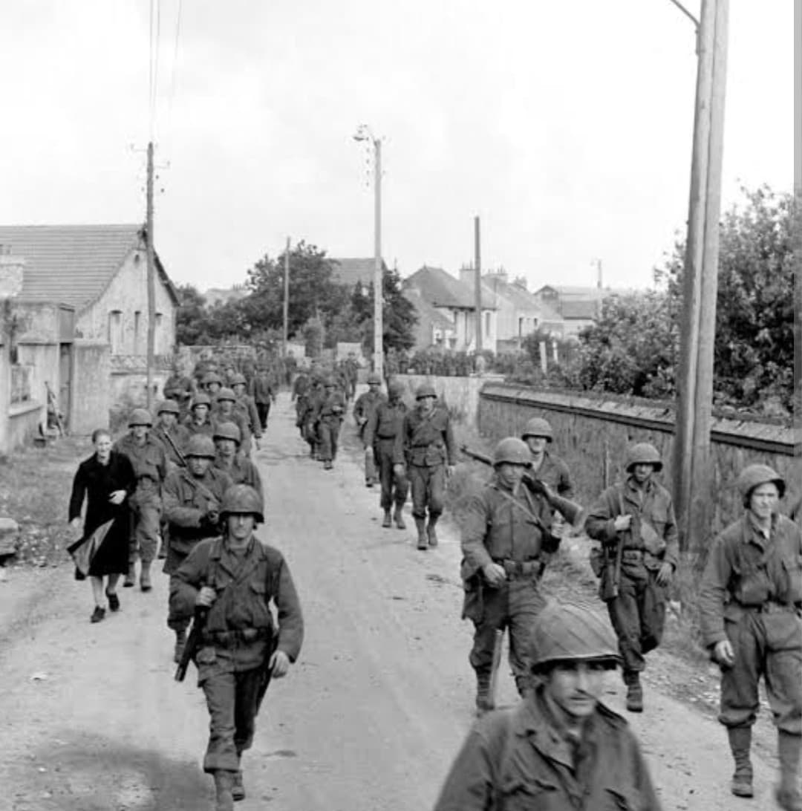
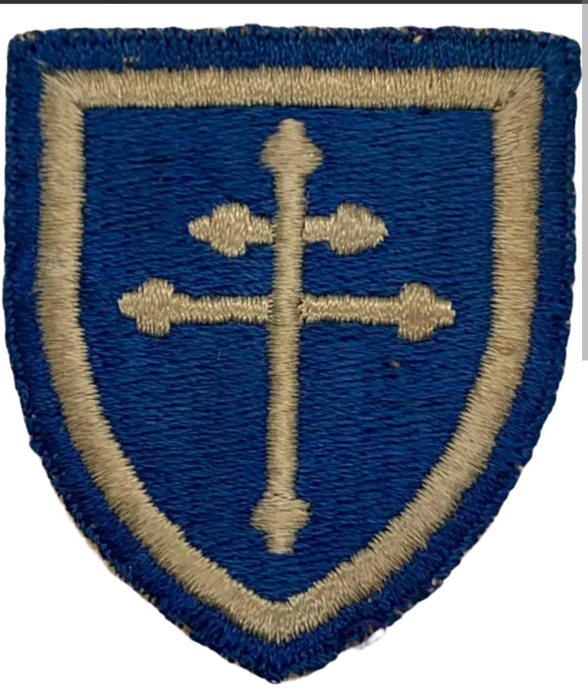
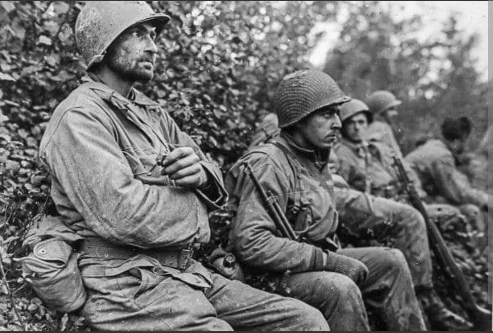

La prise du Fort du Roule à Cherbourg, la traversée de la Seine et l'enfer de la forêt de Parroy

Surnommée « Cross of Lorraine » (La Croix de Lorraine), la **79th Infantry Division** de l'US Army s'est imposée en Europe comme une unité d'assaut redoutable.
Engagée à partir de juin 1944, elle s'est illustrée de la capture décisive de **Cherbourg** à la traversée de la Seine, la bataille de la forêt de Parroy et le franchissement du Rhin.
Créée en 1917, la division adopte pour insigne un écusson bleu à bordure blanche chargé de la **Croix de Lorraine** bleue, en hommage à ses victoires héroïques remportées en Lorraine lors de la Première Guerre mondiale (notamment à Montfaucon).
Réactivée en juin 1942 au Camp Pickett, la division effectue ses entraînements sous le commandement du général **Ira T. Wyche**.

Débarquée sur Utah Beach à partir du 12 juin 1944, la 79th Division mène l'assaut direct sur **Cherbourg**, s'emparant du fortifié **Fort du Roule** le 25 juin.
Le 19 août 1944, la division réalise la **première traversée alliée de la Seine** à Mantes-Gassicourt, établissant une tête de pont solide face aux contre-attaques allemandes.

À l'automne 1944, la division mène la terrible **bataille de la forêt de Parroy** en Lorraine, avant de percer vers Saverne et d'épauler la 2e DB française à Strasbourg.
En mars 1945, la division franchit le Rhin à Rheinberg (*Opération Flashpoint*) et participe au nettoyage de la poche de la Ruhr.
Au cours de ses 248 jours de combat, la 79th Infantry Division enregistre plus de **15 200 pertes au combat** (dont 2 476 tués).
Trois de ses hommes ont reçu la Medal of Honor. La division a capturé plus de 35 000 prisonniers allemands durant la campagne.
Page du Musée HOP WW2 – Section Unités & Divisions Célèbres